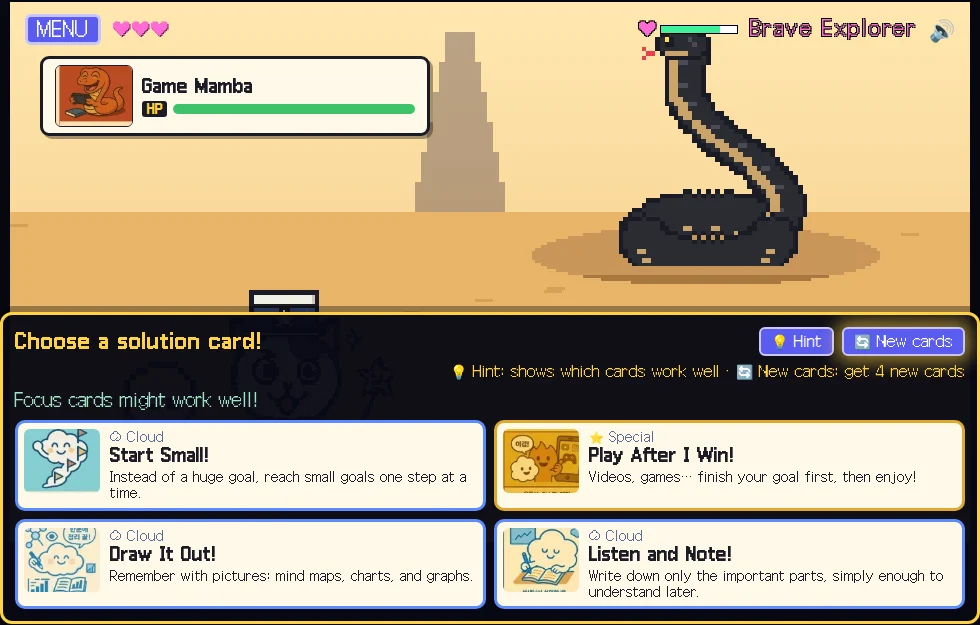
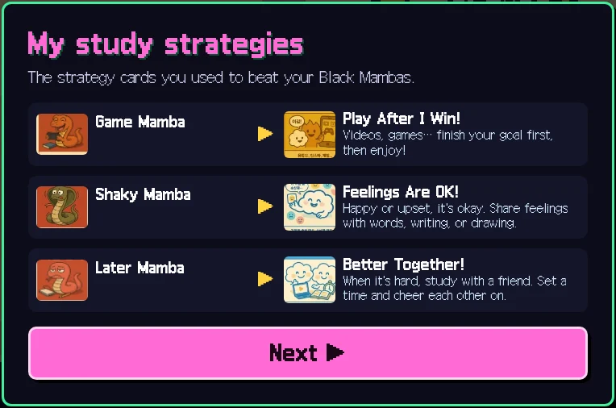

Fewer than one in three Korean elementary schools has a full-time school counselor, and support is hardest to reach in small rural schools. I rebuilt my Hwanggok motivation program as a free, 30-minute web game that a classroom teacher can run alone. I am now arranging a first classroom pilot with elementary schools in the Gimpo and Incheon area.
A Community Chest–funded homecare project for 50 elementary and middle-school children in Gimpo. As Psychological Homecare Planner & Data Analyst, I combined individualized 1:1 child coaching with parent education, family-strengthening activities, community linkage, and a descriptive pre–post outcome analysis.
A four-session, game-based academic motivation program I designed and led for a third-grade class—using DISC-inspired characters, “Black Mamba” obstacle cards, and strategy cards—then extended into an assessment-informed psychological consultation for the school.
A five-session group for seven young teenagers with borderline intellectual functioning, requested because the students struggled to focus, even through their own assessments. Each session opened with play. By the post-program assessments, students who could not stay with a test were finishing it.
An annual psychoeducational support project for people grieving a companion animal. Interviews, memorial nights, and creative remembrance activities shaped the work, which was covered by Kuki News and developed into an ISBN-registered eBook.
33 coaches and 103 adult clients, six one-to-one sessions each, in partnership with the psychology creator Cool Summer Night. About 85% of applicants had already been through counseling or psychiatric care. What they asked for next was room to grow, and a coach willing to offer direction as well as questions.
Six-session, one-to-one coaching for first-year students admitted through equity-focused admission tracks, run with the university’s Office of Admissions. As one of 15 coaches, I worked with two students; program-wide, self-direction, self-efficacy, and college adjustment all rose significantly.
A child’s chance to learn how motivation works should not depend on whether their school is big enough to have a counselor. I turned my classroom motivation program into a web game that any teacher can run in one class period, and I am taking it first to the schools that have the least support.
The title screen of I’m on the Next Level in Education, the web game version of the program.
29.6%of Korean elementary schools had a full-time professional school counselor (1,830 of 6,192), as of April 2025
1,071 : 1students per school psychologist in the U.S. in 2024–25, more than twice the recommended 500 : 1
~30 minfor all six episodes, within one class period, run by the classroom teacher with no counselor required
01 / The gap
Support is thinnest where schools are smallest
In Korea, fewer than one in three elementary schools has a full-time professional school counselor, the lowest rate of any school level. Middle and high schools are far better staffed. Small rural schools, with only a few classes and long distances to community services, often have no one on site whose job is students’ psychological well-being.
School psychology has named this pattern for a long time. In the United States, shortages of school psychologists and other school mental health providers are most acute in rural and high-need schools, where positions can stay empty for years. Prevention and early support, the work that could reach every child, is the first thing to disappear.

When a Black Mamba attacks, students answer with a solution card.
02 / The idea
Make the program portable
The original Hwanggok program needed me in the room for four sessions. The web version keeps its core (a learning character, a goal, the obstacles I call Black Mambas, and strategy cards) and packs it into six short episodes that take about 30 minutes. It runs in a browser on a tablet, Chromebook, or phone, with no install and no login, and it works in Korean and English.
Why one session
Small, but not trivial
Research on single-session interventions suggests that one well-structured encounter can shift how young people see their own problems and their ability to act, including when it is delivered online. The game borrows that logic: name the obstacle, match it with a strategy, and leave with a concrete plan for when and how long to try it.
Built for classrooms
A teacher can run it alone
No counselor needs to be present. Students choose a preset adventurer name and receive an anonymous code, so no names or contact details are collected. Anything a child writes, such as a goal or a promise, stays on the device.
What students take home
A card, not a worksheet
At the end, each student saves or prints a profile card with their character, their Black Mambas, the strategies that beat them, and a GROW action plan. It is something to keep on a desk, not a form to hand in.
03 / Now and next
First classrooms, then widening the lens
I am now arranging a first classroom pilot with elementary schools in the Gimpo and Incheon area, run in partnership with the classroom teacher. The first goal is practical: can a teacher run it within one class period, and do students stay engaged from start to finish?
The area spans small schools on its rural edges as well as large urban ones. That makes it a natural place to look at whether children in rural and urban classrooms respond differently, both in how the program is carried out and in what changes for them. A formal evaluation will follow ethics review.

Each Black Mamba is paired with the strategy that beat it.
Money Today. (2026, June 24). “힘들어요” 말하려고 해도… 초중고 절반은 상담교사 없다 [Half of Korean schools have no school counselor]. Ministry of Education data as of April 2025. Link ↗
National Association of School Psychologists. Shortages dashboard and workforce information. Link ↗
Franta, E., Skaar, N. R., Morse, M., Clopton, K., Schmitz, S., & VanHorn, D. (2026). Training comprehensive school mental health providers: Reducing shortages in rural and high needs schools. Behavioral Sciences, 16(5), 648. doi:10.3390/bs16050648
Schleider, J. L., & Weisz, J. R. (2017). Little treatments, promising effects? Meta-analysis of single-session interventions for youth psychiatric problems. Journal of the American Academy of Child & Adolescent Psychiatry, 56(2), 107–115.
Schleider, J. L., Mullarkey, M. C., Fox, K. R., et al. (2022). A randomized trial of online single-session interventions for adolescent depression during COVID-19. Nature Human Behaviour, 6(2), 258–268.
Community practice · Family support · 2025 cohort
품패밀리 / Poom Family: A Homecare Project in Stories and Data
“잘해왔고, 잘하고 있고, 잘할거야” — a family-strengthening project that treated everyday life as part of the intervention. The spread below brings together the people, pathways, and descriptive outcomes behind a 2025 community program.
Poom Family Growth Diary — a record of small changes noticed in everyday life.
01 / The premise
Start where the family already lives
For a child, a goal is never only a school goal. It is shaped by the rhythm of home, the caregiver’s expectations, peer relationships, language, available resources, and the child’s own sense of agency. The Poom Family project brought psychological homecare into that ecology rather than asking families to change in isolation.
Working with SkyDream Coaching Psychology Center and Gimpo Second General Social Welfare Center, I served as Psychological Homecare Planner & Data Analyst. Individualized coaching sessions with each child formed the core of the home-based work. Assessment-informed conversations, family-strengthening activities, two parent-education sessions, and practical community support complemented that child-focused work.
50elementary & middle-school children
2025January–December program year
2parent-education sessions
1home–family–community pathway
1:1child coaching
At a glance
Program brief
Program
2025 Community Chest–funded child & youth family-function strengthening project
Population
Children in elementary and middle school identified through community welfare-center screening
Core work
Individual home-based coaching with each child, tailored to goals and daily routines
Additional support
Parent education, family-time activities, and practical community resources
Partners
Sky-Dream Coaching Psychology Center × Gimpo Second General Social Welfare Center
Community network: Gimpo Education Support Office, Gimpo Family Center, Gimpo Child Protection Agency, Gimpo Foreign Residents Support Center, Dreaming Church, Woori Ihaengbok Dolbom Center (Maesuri branch), and Tongjin Temple.
The operating model
Support follows the child’s ecology
01ScreenWelfare-center referral and family-context review
02CoachIndividualized, home-based goals and routines
03StrengthenFamily time, parent learning, meals, materials, language support
04LinkCommunity resources and clinical mental-health referral when indicated
A goal becomes more reachable when the people and routines around it are part of the conversation.
Stories made the family’s courage and participation visible.
02 / The family story
From a service record to a lived story
The project’s booklet does more than document activities. It preserves moments that can disappear from a formal report: a child beginning to look around a new place, a caregiver offering reassurance, siblings discovering something together, or a family finding a shared rhythm.
That narrative lens mattered in practice. Home visits allowed the team to notice how space, routines, caregiver availability, and language shaped what a child could try next. The task was not to impose a single ideal of family functioning, but to identify a workable next step with the family.
03 / Who participated?
A 50-child cohort, read in context
Grade distribution reported at the end of November 2025.
50children
Lower elementary34% · 17
Upper elementary38% · 19
Middle school28% · 14
Household context
Family forms were not one-size-fits-all
Reported household categories may overlap; multicultural households include single-parent and parent–child families.
Parent–child27
Single-parent20
Multicultural16
Grandparent-led3
04 / The work at home
Make the next step small enough to try
Homecare planning translated broad hopes — “be more independent,” “get along,” “keep up with school” — into actions that could be rehearsed in ordinary settings. Child coaching focused on self-direction, peer relationships, and academic routines; caregiver conversations connected those goals to the family’s actual time, energy, and resources.
Support also extended beyond the coaching conversation: meal assistance, educational materials, multicultural-language education, family-time activities, and linkage to clinical mental-health services when indicated. The welfare center’s local network made it possible to treat psychological support and practical stability as connected rather than competing needs.
Small evidence of agency: a conversation, a goal sheet, and a familiar home environment.
05 / What shifted?
A descriptive pre–post snapshot
Program records for children whose participation had ended by 11 November 2025. Values are descriptive, not a causal estimate.
Self-direction+3.7
Pre 30.7Post 34.4
Self-efficacy+5.9
Pre 74.3Post 80.2
Peer-relationship self-check+5.3
Pre 29.8Post 35.1
Pre-programPost-program
“Find the small success first.” The homecare planner’s field note.
Observed in the program81%
of participating children were recorded as showing a positive change in peer relationships.
What the numbers can — and cannot — say
The pre–post pattern is encouraging: self-direction, self-efficacy, and peer-relationship self-check scores all moved upward, and positive relational change was observed for 81% of children in the program record. These figures are best read alongside the stories and the home contexts that produced them. They describe a service experience; they do not replace each child’s narrative or prove that the program alone caused the change.
06 / Beyond the visit
Build the bridge around the child
The Poom Family project made a practical proposition: when support is screened through a welfare center, delivered in the home, and connected to family and community resources, a child’s goal can be held by more than one person. My role sat between planning, psychological practice, and data — listening for the details that can make a plan livable.
The next question is how to strengthen the school connection so that changes in home routines and peer relationships are not left at the classroom door. That is the continuing direction of my work in family–school–community collaboration and early intervention.
The team behind the homecare pathway.
The 2025 Poom Family growth-sharing event — a public moment for private, everyday progress.
In the classroom · May 2025
The Next Level of Learning
At Hwanggok Elementary School, I designed and led a four-session academic motivation program for a third-grade class, then extended the classroom work into an assessment-informed school consultation. The project combined a game-like learning journey with attention to personality, anxiety, and interactional context rather than treating motivation as a matter of effort alone.
Learning through participation in the Hwanggok classroom.
A learning journey
Make the invisible visible
Motivation can sound abstract to a child. I developed a story world called I’m on the Next Level in Education to give students a way to talk about their learning style, the energy behind their goals, and the habits or feelings that get in the way. Each session turned an idea into something they could see, hold, draw, or try out.
Students watched a custom animation and explored DISC-inspired animal characters. A character badge offered a playful starting point for naming strengths, possible blind spots, and ways of working with others.
02 / Aim
Find your energy and a goal
Activities about study energy and learning needs led students toward a goal they could recognize as their own. Collecting energy stickers made the idea of motivation concrete.
03 / Notice
Name the Black Mamba
A deck of “Black Mamba” cards turned common obstacles to studying into characters. Each student selected the card that best represented a familiar learning barrier, then redrew it in a personal visual style and added the thoughts, situations, or relationships associated with it.
04 / Respond
Choose a strategy, take a step
“Cloud and Fire” solution cards helped students match obstacles with study strategies. A shield, helmet, and sword game led into a symbolic final act: stepping on the Black Mamba they had drawn and celebrating with a high-five.
From framework to classroom
Turning learning competencies into play
I developed the four-session curriculum by drawing on the component domains of the official learning competency assessment jointly developed by the CNC Cognitive-Behavioral Research Institute and the Strength Coaching Research Institute. I connected those domains with DISC personality characteristics, then designed a story and character activities that children could explore in the classroom.
The badges and illustrated cards below show how the program translated learning strengths, everyday obstacles, and practical study strategies into hands-on activities.
DISC-inspired character badges for exploring learning strengths · open image ↗Black Mamba obstacle cards · open image ↗Learning strategy cards · open image ↗
An anonymous Black Mamba from the whole-class activity—one learning barrier redrawn in a child’s own visual language. · open image ↗
From program to consultation
Looking beyond a single behavior
A student–teacher conflict raised a question the lesson alone could not answer: Was anxiety shaping the difficulty, was the classroom interaction part of it, or were both at work? Rather than single out one child, I wove GAD-7 items into a story-based check-in completed by the whole class, then considered the responses alongside personality information and classroom observation.
Together, these different viewpoints became a psychological consultation report for the school, connecting the four-session program to practical student support and classroom planning.
In practice
More than a lesson about trying harder
The project began by helping students name a learning difficulty and match it with a strategy they could try. It ultimately connected original program design, assessment, classroom observation, and school consultation—bringing together my interests in motivation, self-directed learning, and early support for students who may be starting to disengage.
Connecting illustrated materials to conversation, observation, and classroom support.
At an after-school program in Gimpo, a five-week group for young teenagers with borderline intellectual functioning started every session with play. By the end, children who could not get through a psychological test were finishing it.
By Yunho Kim · Co-planner and assistant instructor
Working through a worksheet at the Gimpo 2nd General Social Welfare Center, where the Green Friends School meets after school.
A psychological test is only as good as the attention behind it. The request that reached our center began there. The Green Friends School (Chorok Atti Hakgyo) is an after-school program at the Gimpo 2nd General Social Welfare Center. Its staff described a group of students who struggled to focus and were hard to settle. Their assessments were becoming hard to trust, because some children could not stay with a test long enough for the answers to mean anything.
One student’s results had to be read with real caution. Another asked to leave and see their mother about every five minutes. These are not unusual stories among children with borderline intellectual functioning. They sit just above the threshold for many formal supports, and often just below what a regular classroom expects.
The welfare center asked Sky-Dream Coaching Psychology Center to design a response. Our team of four built a five-session group program for seven students: lead instructor Choi Eun-sook, with Cho Bo-young, Park Bo-kyung, and me. It ran for 120 minutes every Wednesday from Sept. 3 to Oct. 1, 2025. Alongside co-planning the sessions, the assistant instructors each took individual students through the pre- and post-program assessment battery. It included the Bender Gestalt Test, Kinetic Family Drawing, House-Tree-Person, and the Egogram.
Attention, it turned out, was not where we could start. It was what arrived once the children felt safe, capable, and a little proud.
Play before paper
Every session opened with a game
The plan had serious aims: emotional growth and character education, healthy expression of feelings, verbal reasoning, social skills, and a first look at future careers. But we did not open with worksheets. Every session began with a playing activity, a “relax game.” It gave the children an easy win before anything was asked of them on paper.
Some games were quiet, like reaching into a black box to find ping-pong balls by touch alone. Others filled the room, with gym balls, and floor cards that told everyone when to move and when to stop. The rules were simple and success was visible. That was the point. Each small success was a rehearsal for the feeling we most wanted the children to take into the harder tasks: I can do this.
Gym balls opened one session. The program always began in the body before it moved to the page.
The route
Five sessions, four villages, and a ceremony
The program was built as a journey. Each week the group “arrived” at a new village, and each village carried a theme.
1
The Village of TrustGroup rules and rapport, a heart-opening activity, sorting personal values, and rhythm-and-language play about reading social situations.
2
The Village of ReflectionSorting mixed color, shape, and word cues to train attention and flexible thinking; “la-la-la” communication, in which rhythm replaces words; and quiet time with one’s own feelings.
3
The Village of CompanionshipTimed picture matching, a tactile game with a mystery box, color-rule teamwork, and mapping the people each child can lean on.
4
The Village of AnalysisChoosing the values that anchor a life, strengths-word bingo, and talking through real difficulties and possible solutions.
5
Bless My LifeDried-flower bottles as a symbol of a valued life, a “my future project” plan, and the Dream-Teach presentation and award ceremony.
Under the program banner: group work began with getting comfortable being seen and heard.Cards on the floor, rules in motion: color decided when to go and when to stop.
The second test
Staying to the last page
The clearest change showed up where the trouble had started: the assessment table.
In the post-program assessments, the student whose earlier results had been hard to rely on worked through every measure with steady focus. This time the results were ones we could interpret with confidence. The student who used to leave every few minutes to find their mother did not ask to go at all, and finished the whole battery.
Across the group, the instructors saw the same shift in smaller ways. Children who had drifted were now more absorbed and more willing to volunteer. They were more patient when a task did not go right the first time.
What I took away
Emotion is not the soft part
I went in thinking of this as a program about cognition: attention, reasoning, following rules. I came out convinced that for these children, feeling came first. Rapport opened the door. Play made success cheap and frequent. And repeated success grew into a sense of “I can,” which looked a great deal like self-efficacy. Only then did attention and persistence have somewhere to stand.
It also changed how I think about assessment. A test score is produced in a relationship, not in a vacuum. If a child does not yet feel safe enough to stay in the chair, we may not be learning what that child can actually do. For my future work in school psychology, that is not a side note. It is part of what makes an assessment valid.
The final session: the Dream-Teach ceremony, with the dried-flower bottles each child made to “bless my life.”
Psychological education · 2022–2025
Memorial Night: Making Space for Pet Loss
A companion animal’s death can leave a quiet kind of grief. The Pet Loss Syndrome Support Project created a place where that grief could be named, understood, and remembered together.
Sharing the project’s work with an audience.
01 / The starting point
When grief needs language
From 2022 to 2025, I planned and facilitated an annual psychoeducational support project for people coping with the loss of a companion animal. The work began with a simple premise: pet loss is a significant experience, yet many bereaved owners have few places to speak about it without having to explain why it hurts.
As Project Manager and Instructor, I coordinated group activities, volunteers, interviews, and research-informed grief-support materials. The project brought together psychological education, creative remembrance, and conversations grounded in people’s own experiences.
Remembering an animal is also a way of recognizing the relationship that shaped a person’s everyday life.
Interviews with bereaved pet owners helped the project stay close to the emotional reality of pet loss. Their experiences informed conversations about attachment, the changing routines that follow a death, and the different ways people try to cope.
That interview-based inquiry was later covered by Kuki News. The reporting gave the project a public language while keeping its focus on empathy: grief does not become less real because the person who died was an animal.
The program combined psychoeducation with activities that gave participants a way to express memory. A memorial-night session included a talk on the stories of companion animals and a creative activity in which participants made small pet figures and memory pieces.
The goal was not to prescribe one correct way to grieve. It was to offer several points of entry: listening, talking, making, and simply staying with a memory for a while.
Memorial Night: a room organized around remembrance and conversation.
A small handmade figure as a tangible memory.Making remembrance personal and visible.A memory panel created for a companion animal.
Presenting the memorial-night program.
04 / From program to publication
What the project left behind
Under the supervision of a Harvard-trained clinical psychology Ph.D., I integrated psychological literature on grief, attachment, and coping with interview-based observations from the project. This work developed into the ISBN-registered eBook Memorial Night: Pet Loss Syndrome (2025).
The booklet introduces pet loss, common emotional responses, attachment-related reactions, coping approaches, and ways of moving toward recovery in accessible language. It became a record of the project’s central commitment: support can begin by taking a relationship seriously.
The people who carried the Pet Loss Program forward together.
Individual coaching · Kwangwoon Coaching Psychology Institute × Cool Summer Night · 2023
Not Only What Hurt
Many of the adults who came to coaching through a psychology creator’s audience had already spent time in counseling. What they asked for next was room to grow, and that changed how I coached.
By Yunho Kim · Psychological coach
33coaches
103clients matched with a coach
61:1 sessions per client
85%of applicants had prior counseling or psychiatric care
Source: program intake records for the 2023 spring and fall rounds (143 applications). Applicants were screened with the PHQ-9. Counts exclude cancelled, unreachable, and unassigned applications.
The invitation: “Looking for people who want to change through coaching.” The Kwangwoon University Coaching Psychology Institute’s talent-donation project, introduced with Cool Summer Night’s character.
Some people arrive at coaching because something is wrong. The clients I met in 2023 often arrived for a different reason. They already knew a great deal about what had gone wrong, and they wanted to find out what could go right.
They came through Cool Summer Night (서늘한여름밤, often shortened to Seobam), a psychology influencer and content creator. She was trained in clinical psychology through the master’s level and was a member of our Kwangwoon Coaching Psychology Institute. Her content is known for comfort: it names hard feelings gently and takes them seriously. When the institute partnered with her on a talent-donation project, offering coaching from its master’s and doctoral students at a modest fee, her audience became our clients.
I was one of the psychological coaches. The partnership ran in a spring round and a fall round. Over the year, 143 people applied, and 103 were matched with one of 33 doctoral- or master’s-level coaches for six one-to-one sessions. I coached five of them. We worked on what they brought: career direction, emotion regulation, self-awareness, goal setting, and personal growth.
The invitation
Coaching, explained in a character’s voice
The recruitment post spoke in Cool Summer Night’s gentle, hand-drawn style. It named who coaching could help: people weighing a career move, new leaders and middle managers, people who wanted a concrete way to change a habit, and anyone hoping to grow. It also drew a clear line that shaped the whole project. If you need to recover from depression or anxiety, the post recommended counseling. If growth and goals were the change you needed most, despite some low mood or worry, coaching was the fit.
One line put it simply: if counseling treats an illness, psychological coaching is exercise for staying healthy. That distinction is why every applicant was screened before being matched with a coach.
Who it was for: career questions, new leaders, behavior change, and growth.“Coaching is a different service from counseling.” Recovery points to counseling; growth points to coaching.The details: six sessions, ₩100,000–200,000 depending on coach experience, in person or online.
They could describe their pain fluently. What they had rarely been asked was what they were good at, and where they wanted to go.
Who came
An audience that already knew the language of therapy
Because they found us through a creator whose work offers comfort, most clients already had experience with counseling or clinical treatment. The intake forms made that plain: about 85% of applicants reported prior counseling or psychiatric care, and most were women in their twenties to forties. Every applicant also completed the PHQ-9 depression screen at intake. Coaching is not the right support for severe depression, so the screen helped keep coaching for the people it could actually serve. They were articulate about their histories and familiar with the vocabulary of feelings and patterns. That made the early sessions unusually quick to deepen.
It also revealed something I had not expected. These clients did not want to return only to the stories of what had hurt. Again and again, they showed genuine interest in coaching that develops strengths: identifying what already worked in their lives, building on it, and turning insight into a next step they could actually take.
Prior mental-health services reported at intakeShare of 143 applicants; more than one answer allowed
Counseling78%
Psychiatric care45%
Coaching12%
None11%
What I relearned
Questions, and sometimes answers
Coaching training rightly emphasizes that clients hold their own answers, and that a good coach asks rather than tells. With this group, I found that a purely non-directive stance had limits. Many had already spent long stretches reflecting in therapy. For them, one more open question could feel like more of the same, not like movement.
What helped was balance. I kept the client in charge of the choice, but I became more willing to offer perspective, concrete options, and practical tools when they were stuck. Advice given at the right moment did not take ownership away. It gave clients something solid to push against, accept, or reshape into their own plan.
Why it matters
Between comfort and change
This project sits at a meeting point I keep returning to: the space between clinical care and growth-oriented support. People who have been helped through difficulty still need somewhere to build. The experience shaped how I think about a continuum of support, where prevention, strengths development, and treatment are not separate worlds but steps a person can move between. It also shaped how I calibrate my own role, reading each client for whether they need a question, a reflection, or a suggestion.
Individual coaching · Kwangwoon University · 2022
A Coach for the First Year
Students who enter university through equity-focused admission tracks often arrive without the networks that make a first year easier. In 2022, a six-session coaching program gave each of them a coach, and a plan of their own.
By Yunho Kim · Psychological coach
15coaches
58first-year students enrolled
61:1 sessions per student
6.53satisfaction out of 7
The transition into university is where many students first have to run their own lives: choosing courses, managing time, finding people, and recovering from early setbacks without the structure of high school. For students admitted through equal-opportunity, rural, vocational high school, and Five West Sea Islands tracks, that transition can be steeper.
The Kwangwoon Coaching Psychology Institute designed the 2022 Freshman Self-Direction Coaching Program with the university’s Office of Admissions to meet that moment. Each student was matched with a coach from the institute (a faculty member or a master’s or doctoral student with coaching psychology training) for six one-to-one sessions between April and December 2022. Spring sessions ran on Zoom because of COVID-19 distancing rules; fall sessions moved back to in-person meetings where possible.
I was one of 15 coaches and worked with two students across the full six sessions.
A case-report supervision meeting at the Kwangwoon Coaching Psychology Institute, where coaches reviewed their work with faculty.
The structure
From “Who am I here?” to “What will I do next?”
Every coach followed the same six-session arc, leaving room to follow each student’s own concerns. Students who wanted more support after the sixth session received two additional follow-up sessions.
1
Session 1Orientation
Coaching agreement; exploring hopes and worries about college; comparing current and ideal self-direction.
2
Session 2Exploring goals
Setting a concrete change goal and gauging confidence and motivation to reach it.
3
Session 3Setting the goal
Interpreting a strengths assessment and using strengths to build an action plan.
4
Session 4Planning
Anticipating obstacles and checking the action plan.
5
Session 5Checking in
Working through obstacles; revisiting and revising goals and plans.
6
Session 6Closing
Sustaining motivation and confirming next steps without the coach.
What changed
Self-direction, self-efficacy, and adjustment all rose
Program-wide results from the pre- and post-surveys. All three measures used a 7-point scale, and every increase was statistically significant.
Before and after coachingGroup means, n = 29 · Pre Post · **p < .01, ***p < .001
58students enrolled
46completed six sessions
29completed both pre- and post-surveys
Completion excludes students who withdrew or never began. The analysis includes only students who finished both surveys.
View the data as a table
Measure
Pre
Post
t
p
Proactive personality
4.73
5.24
3.87
< .001
Self-efficacy
4.53
5.32
5.02
< .001
College adjustment
3.15
3.68
2.92
< .01
In students’ words
What students said they took away
Students’ written feedback fell into four themes. The quotes below are translated from Korean.
Being heard · 12 students“Instead of handing me a direct solution, my coach asked for my view, and that made me look back at myself.”
Self-awareness · 6 students“It helped me adjust to university and gave me time to understand who I am and what I value.”
Motivation and confidence · 6 students“As I carried out the plans we made, I felt proud of myself and gained confidence.”
A worthwhile hour · 4 students“We talked comfortably and built solutions I could actually try.”
What I took away
Self-direction is built, not assumed
This was one of my first experiences coaching within a structured, evaluated program, and it shaped how I think about support in schools. Students who are expected to be “independent” on day one often have not yet been given the tools to plan, adjust, and ask for help. A small number of well-structured conversations, with a clear goal, a plan built on strengths, and a check-in when obstacles appear, can make that independence learnable.
The feedback also showed that coaching can reach students who would not seek counseling: for many, it was the first time someone listened closely to their plans for university. That is the kind of early, low-barrier support I want to help build into schools.